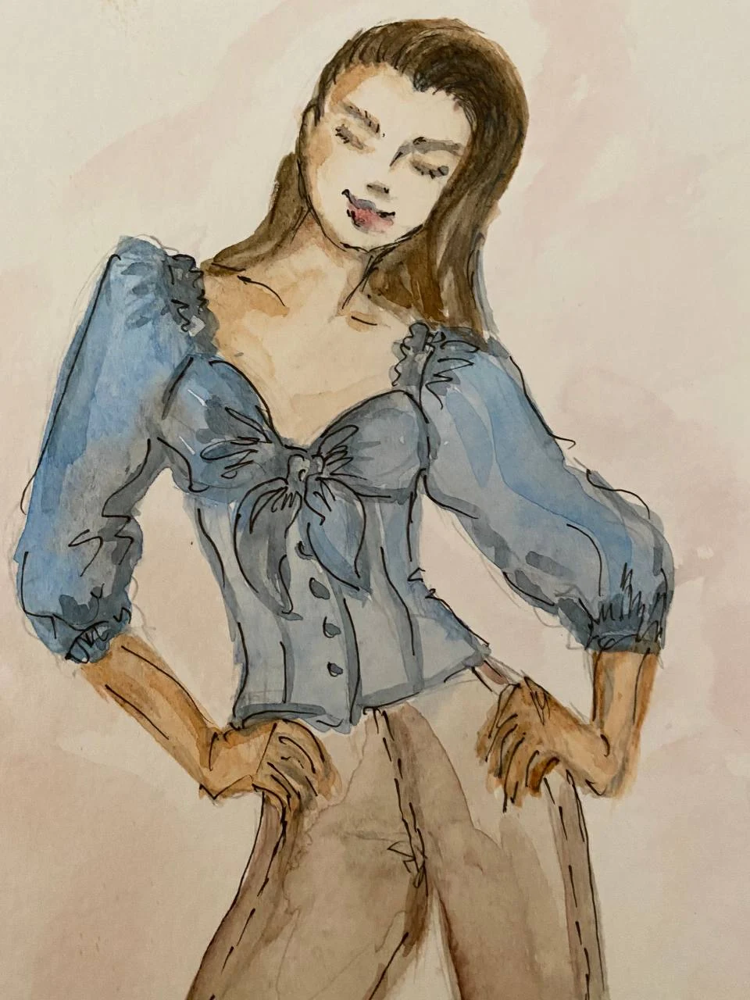
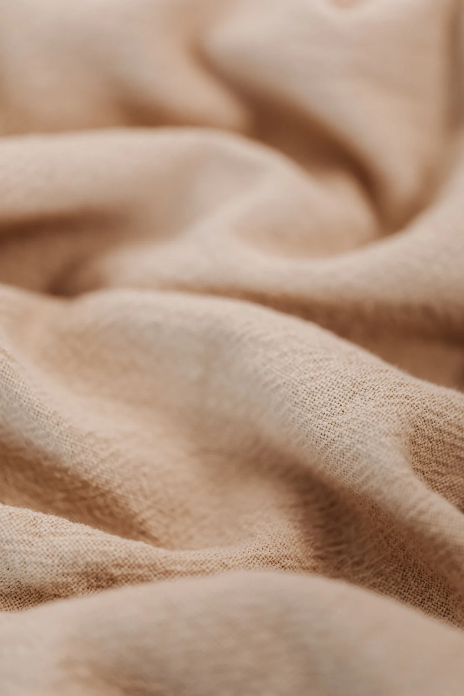
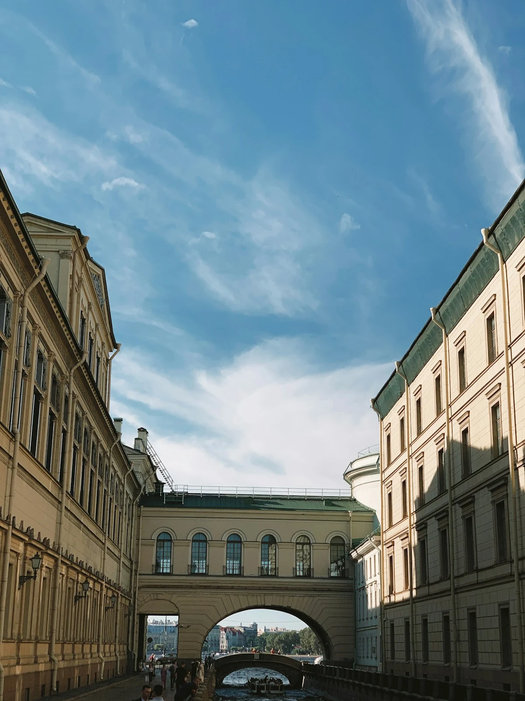
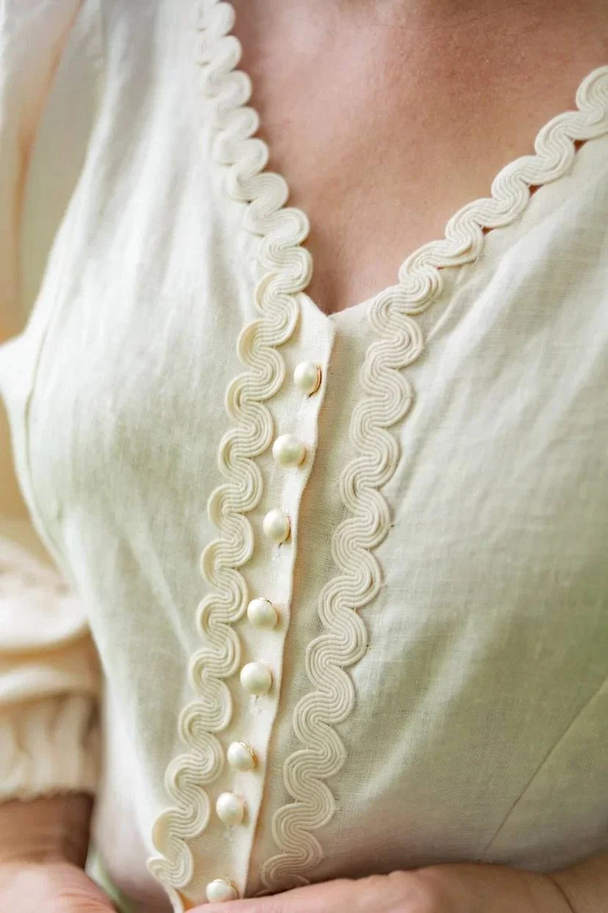
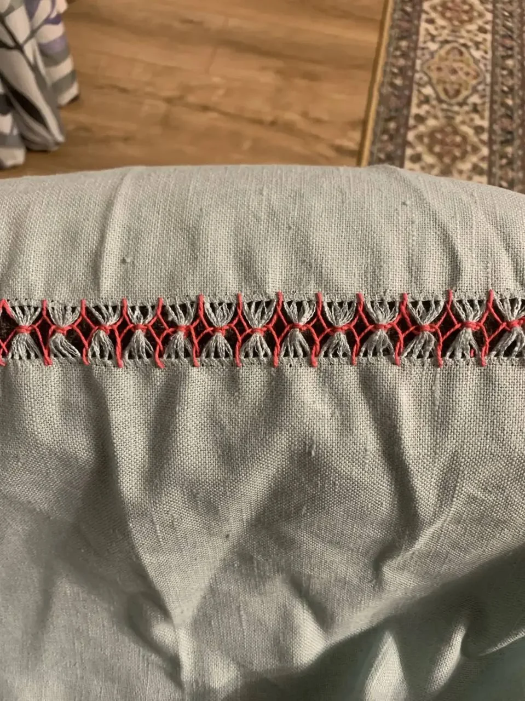
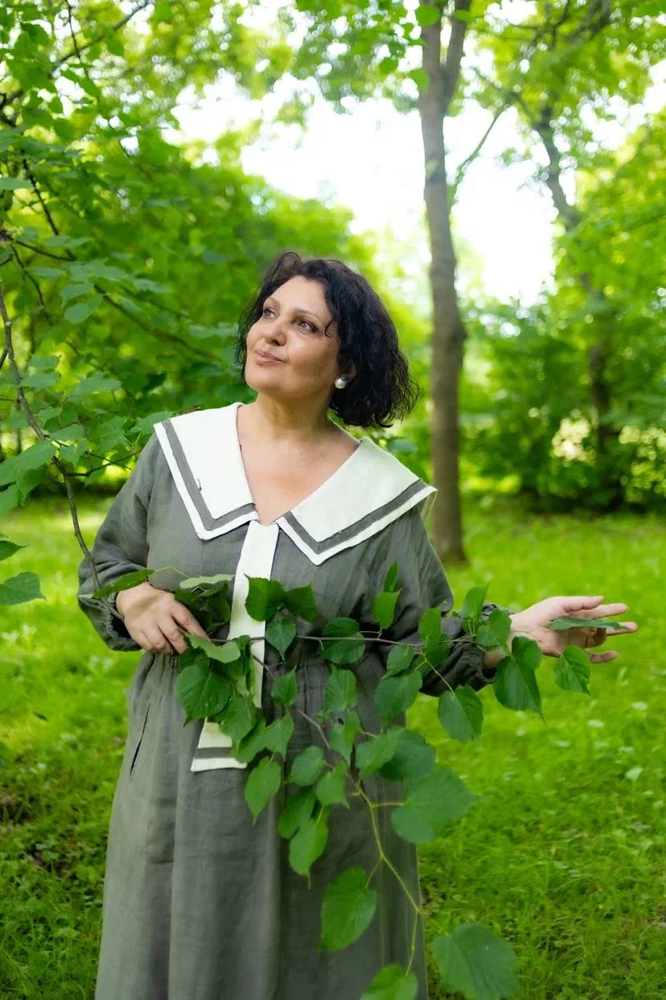
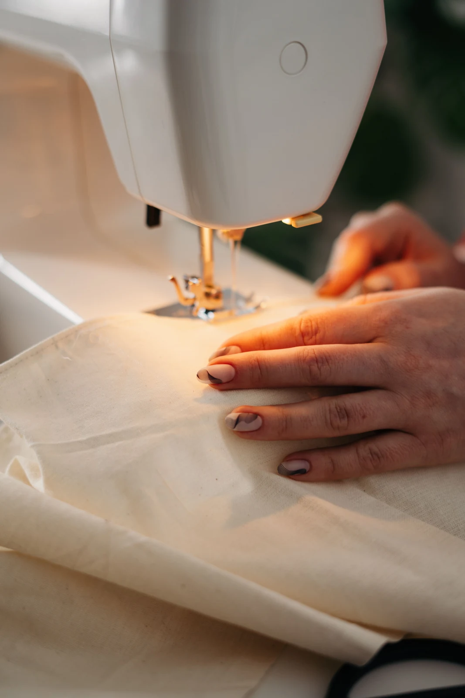
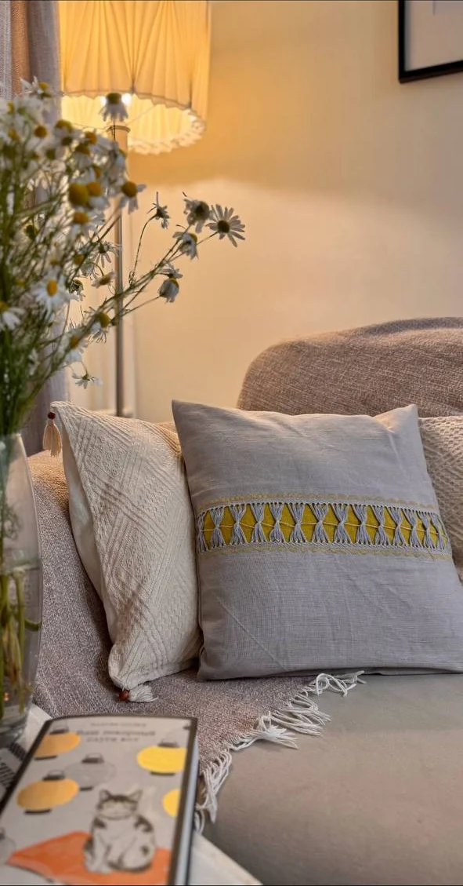
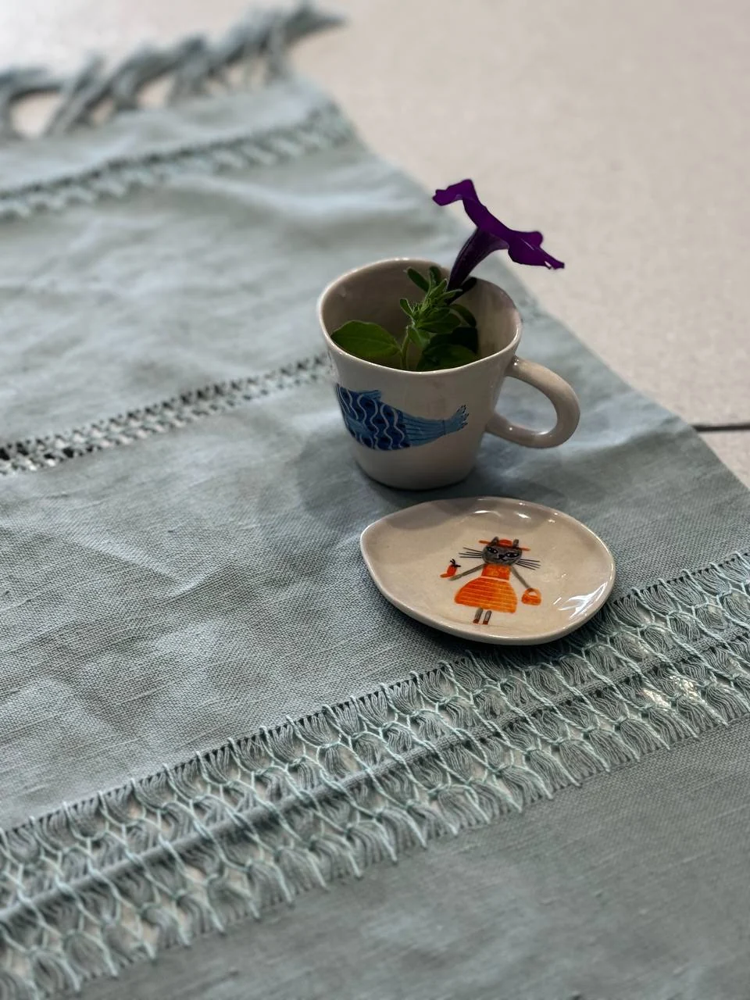

С нуля
Освоить машинку, крой и последовательность пошива своего первого изделия.
Надежда Гусарова
С нуля и с опытом — для тех, кто хочет создавать одежду по своим идеям.
Выбирайте ткани, фасоны и детали. Учитесь шить вещи, которые нравятся и подходят именно вам.
Обучение и стоимость




О Надежде
Дизайнер одежды, художник
и преподаватель шитья
Более 40 лет Надежда создаёт свой гардероб сама — от домашней и курортной одежды до зимних пальто. Выбирает ткани, придумывает модели, шьёт и вяжет вещи под свой вкус и настроение.
У неё учатся с нуля и продолжают совершенствовать навыки. Ученики разных возрастов приходят со своими идеями: освоить крой, разобраться с посадкой, сшить одежду для себя и семьи. Многие занимаются годами.
На занятиях можно учитывать свои пропорции и предпочтения, выбирать материалы, силуэты и детали — создавать одежду, в которой вам хорошо.

Индивидуальные занятия
Работайте над своим изделием с поддержкой Надежды. Выбор модели и ткани, выкройка, примерки, посадка и обработка — содержание занятий зависит от вашего опыта и задачи.
Можно начать с основ или прийти с конкретным вопросом по изделию. Темп работы и количество занятий зависят от сложности модели и ваших навыков.
1 500 ₽ за час индивидуального занятия
Санкт-Петербург
Обсудить свою идею с НадеждойНапишите, что хотите сшить и какой у вас опыт. Место, расписание занятий и необходимые материалы уточните у Надежды.

Собственные идеи и готовые вещи
Платья, куртки, пальто и костюмы, сшитые на занятиях с Надеждой.
Об опыте занятий
Училась у Надежды с октября прошлого года и до июля 25, закончила заниматься в связи с переездом в другой город. Надежда - отличный учитель, мастер своего дела. С ней было очень комфортно работать и совершенно не хотелось расставаться) Я рекомендую абсолютно всем ребятам, кто давно хотел научиться шить и по разным обстоятельствам откладывал.
Я очень благодарна Надежде Борисовне❤️, 3 месяца назад когда я пришла к ней я только умела делать сторчку на машинке😅, а сейчас начиная с абай до пальто умею, очень приятно и комфортно с ней учиться, спасибо Вам большое!!!
Мастер своего дела, очень приятный человек. Рекомендую однозначно👍👍👍
Спасибо большое Надежде за интересные и полезные занятия🧵👗✍! Настоящий профессионал👍💫
Мастер-классы
Небольшие группы,
внимание к деталям
и красивые результаты.


Начать обучение
Расскажите Надежде о своей задумке и опыте. Обсудите, с чего начать и как построить занятия.
Написать Надежде в TelegramИндивидуальное обучение шитью · Санкт-Петербург